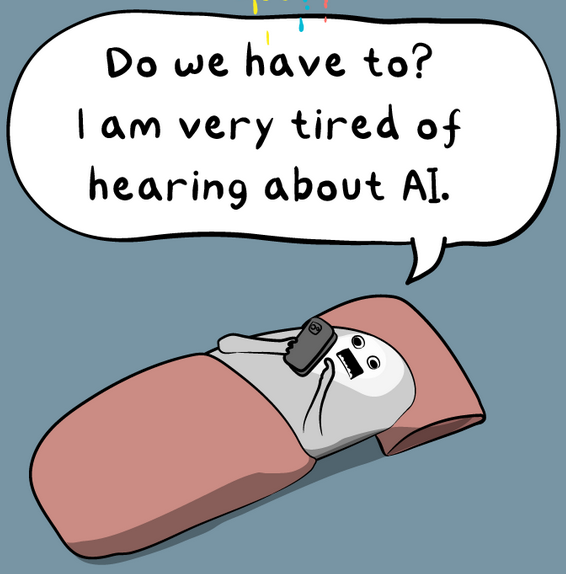
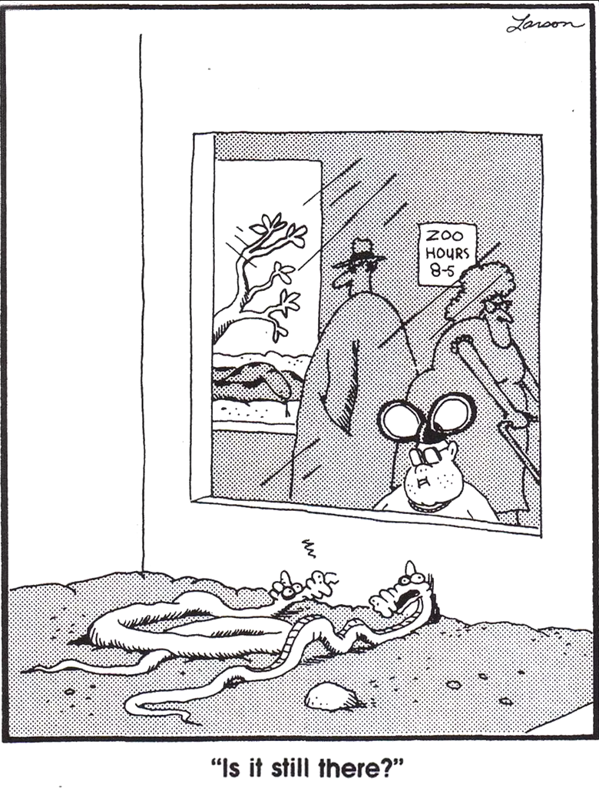

I wrote a sci-fi book about AI before chatGPT came out. Now what?

I wrote a sci-fi book about artificial intelligence. I started the research for it in 2018, from an idea I’d had in 2012. A first draft was done by mid 2021. After no luck pitching to agents, I lovingly disassembled that draft and put it back together by the following summer in 2022, then churned through another round of agent pitches (also nope).
A few months later, at the end of 2022, openAI released chatGPT 3.5 for public use. Three years have since passed. That Oatmeal panel above (from this piece) is how a lot of people feel now about AI - there’s a decent chance you’d be willing to pay to make everyone please shut up about it, please stop inserting it into our lives whether we ask for it or no.
Amid this ceaseless cacophony, I am planning to get the book out into the world. Great timing. I’ve set myself this aim:
Self-publish it, after one more churn cycle, and chart the process here on coveredinbees. I’m guessing it’ll take six to nine months. We’ll see how optimistic that is1. I may possibly attempt an Indiegogo launch campaign in the final weeks.
I’ll be re-assessing the book scene by scene in this final loop, writing about the ideas and the construction of it. It has to remain a product of its pre-chatGPT time. It’s a bad idea to let current events blow one’s ideas around like a weathervane. But our brave new LLM world (bubble pop or not) does offer a chance to reflect. How much has it (a) changed how I think about the book and (b) changed how I think about AI and its impact on us?
Anyone who knows me knows I struggle to see the value of my own work. The book has plenty of flaws, but I’m super-proud of it. This never happens. I feel baffingly, DunningKrugerly confident in it. I’ve worked hard to mix ideas with pace, to write something fun. Your definition of fun may differ, but I think a certain kind of sci-fi fan (i.e. people like me) will dig it. I’m going to roll with that feeling before my brain notices.
So stick your email in the subscribe box if…
- You’re interested in the nuts and bolts of fiction writing and self-publishing (a pretty convoluted process) and want to follow along as I get this done. Maybe you’re especially into sci-fi.
- You’re into ideas about how technology and society thread through each other. You may be trying to get under the skin of what’s actually happening with AI. You might also find yourself drawn to the questions it raises about minds and intelligence, including the collective kind (despite exasperated protests from several / AI / researchers that things like AGI are a dumb distraction).
(I’ll mark sci-fi related posts, in case you want to avoid other stuff I write about.)
In my day-job, I’m now working on analysis of AI workplace impacts. Given that, writing about sci-fi feels a bit like running through town wearing nothing but a fez and a feather boa: equally mortifying and liberating, potentially illegal. But it’s how I was schooled - in the last year of my Sheffield politics degree, Mike Kenny paired social theory with sci-fi every week2. I was introduced there to what’s arguably still my favourite book, Le Guin’s Dispossessed. (We didn’t have to wear just a fez and feather boa in seminars though.) Causal arrows between our imaginations and reality go in all directions (though that has issues - see below).
What’s the book about?
People and technology co-evolve. The path they forge together is messy and unpredictable. Sci-fi slips to the edges of this a lot: AI heaven, liberating us from all Earthly drudgery; or a glowing-red-eyed hell where the best we can hope for is that AI wants us as pets. I wanted to dig into the mess more.
It’s a “two strands turn into one” book. Strand #1 explores just how intractably difficult it would be a re-create something as complex as a human mind. It’s the opposite of Matrix-style “stick a cable in this hole and you’re good to go” and other “brain upload = just pop this cap on / lie on this table” takes that make it look as clean as scanning an item at the checkout. (Recent example: Alien Earth.) Those do have an advantage - just do the upload and get on with the plot. I made a story out of the process itself.
Now, I’m very very not a neuroscientist. But this is fiction, so here’s what I did. If brain knowledge is a vast, carefully curated palace full of the most subtle, inscrutable paintings (see e.g. Damasio’s amazing Self Comes to Mind, a book I leaned on a lot), then I broke into that palace at 3am with a swagbag, cut as many pictures out of frames with a Stanley knife as I could and scarpered before the cops arrived.
With that contraband in hand, strand #1 is about what brain upload looks like if we take the complexity of the human meatsack remotely seriously. It naturally fits a wake up in a room3 setting - arguably a steep challenge for a first time fiction author to make that compelling, but I gave it a go. The dreaded C word4 does arise, but in a slightly novel way I hope.
Strand #2: a ripping yarn built on copyright and intellectual property law. Wild. No, stay with me. The idea is that AI will radically alter our relationship with language. We’re seeing an argument for that erupting into the world right now with LLMs, firmly in “whoa what an unpredictable mess” territory.
Again, sci-fi’s natural grain leans to the extremes, authoritarian in this case - e.g. Ma Boyong’s “City of Silence” short story in Invisible Planets or more recently Where the Axe is Buried; amazing takes on the “AI + 1984 style control and destruction of language = what?” question.
But if we start from where we are now, with the mire of politics, law and money we swim in, where might the evolving mess take us? Strand #2 is a thought experiment about one of those possible destinations. There’s plenty enough darkness in the result, but I’ve tried to get other shades in there.
There also ended up being a fair dose of Evil Robot. Turns out it’s really difficult to avoid.
Self-publishing?
Yep. And not just because all those failed agent pitches mean it’s the only option, no sirree. This is in no way like a jilted lover wailing, “I never wanted you anyway.” Here’s how I comfort myself: self-publishing does actually have some advantages. (“I don’t need you, my life’s better now!”) The book may have its niche - TBC - but it was probably never a very commercial proportion5. While I’ve worked very hard to make the plot bounce along, I have also given all the ideas-y stuff pride of place. That’s why I wrote it - I wanted that challenge of trying to make ideas and plot work together. Kill your darlings schmill your schmarlings. I love my darlings and want them to live. There’s also a level of control - including what I hope to do here on the blog in the coming months - that would be difficult otherwise. Control, yes. Fame, wealth, accolades, less of that. So it goes.
What next?
Stick around for sci-fi and other ramblings. As well as general progress reports, here’s some things I might try and write about.
- Forecasting versus thought experiments in science fiction. Bouncing off Le Guin’s brilliant short intro to the Left Hand of Darkness. As I mentioned, part of my day job is attempting some predictive scenarios of AI’s impact on work (there’s a little over 30 other reports on this subject I’ve found, most out in the last two years - everyone’s at it). Le Guin makes a forceful case that sci-fi shouldn’t be splashing about in those waters: “Prediction is the business of prophets, clairvoyants, and futurologists. It is not the business of novelists. A novelist’s business is lying.” But the genre’s role in shaping how we conceive our present and future (for better or worse) is an interesting tangle.
- Creativity. There’s a lot of insistence that AI can’t be creative like wot a human can. “Like a human” is probably true, but it’s harder to dismiss AI creativity entirely. There are overlaps between how AI and humans do it. A common line: “AI can’t go beyond its training like we can.” Really? I’ve written a similar-ballpark short story that explores this. The issue isn’t the creative divide between meatsack and machine, it’s how the structures we inhabit use and abuse creativity. I should read something by the late Prof. Margaret Boden before I write anything about this.
- Intelligence. AI engenders some odd views about it. The singularity, for example - the notion that once AI surpasses humans, it’ll start an exponential feedback that’ll make us to AI as ants are to humans etc etc blah. Uh huh. But we already have systems more intelligent than a human - they’re called ‘collections of humans’ and their organisations. Who do you think built London or the 747? Why didn’t they start exponential feedbacks? Positive feedbacks, yes, but they seemed to stabilise - why? What, if anything, does that say about intelligence? That brings up some curious viewpoints - people who think, yes, we’ve made superintelligences like the market system, but only in the way that ants (them again) build complex nests, and we mustn’t presume to interfere etc etc blah. Uh huh. So yeah, fun to be had here.
- Consciousness. Why there’s (almost) no point talking about it. We can mark out a space around it - what’s left after we’ve cut away what can rationally be discussed. But the thing itself? Consciousness is that kid in the Mickey Mouse hat in the Larson cartoon below. Don’t be one of the snakes. (Actually, that might be all there is to say on this subject. I will probably still go on about it.)

CUTTINZ
AI is regularly the MacGuffin in movies (latest example) but it’s also become a policy and economy MacGuffin. “How to improve productivity? AI. How to make public services better? AI. How can I stop my male pattern balding? AI.” Etc. Every second article on LinkedIn is now either “AI must be resisted / resistance is futile” (see Ursula von der Leyen for example of the latter).
One suspects many may be mistaking AI for magic fairy dust.
It’s tricky to chart a sane course through all this.
Compare to Coyle’s point about BIP and AIP (before and after the iphone). Quote: Coyle quote on smartphone world
Section on prediction in fiction and work… differences, overlaps
But it won’t happen that way. Or more accurately, it hasn’t and isn’t happening that way, and it will continue to very not happen. It’ll be as it’s always been – an almost entirely unpredictable mess. People and our technology have always grown together, changing each other in tandem.
“This book is not extrapolative. If you like you can read it, and a lot of other science fiction, as a thought-experiment. Let’s say (says Mary Shelley) that a young doctor creates a human being in his laboratory; let’s say (says Philip K. Dick) that the Allies lost the second world war; let’s say this or that is such and so, and see what happens… In a story so conceived, the moral complexity proper to the modern novel need not be sacrificed, nor is there any built-in dead end; thought and intuition can move freely within bounds set only by the terms of the experiment, which may be very large indeed.”
Speculative fiction has to speculate, but it doesn’t need to be trying to forecast. The speculation has other purposes. Fiction has to try and predict, it can’t avoid it – but it’s the mess that interests me, not the extremes.
As Le Guin has said, science fiction isn’t about prediction… no, she said something better than this! Err what was it? https://www.goodreads.com/topic/show/1294820-introduction-left-hand-of-darkness
“Prediction is the business of prophets, clairvoyants, and futurologists. It is not the business of novelists. A novelist’s business is lying. The weather bureau will tell you what next Tuesday will be like, and the Rand Corporation will tell you what the twenty-first century will be like. I don’t recommend that you turn to the writers of fiction for such information. It’s none of their business.”
Cf. actually working onwhere this goes.
I started with two seeds and let them grow together, to see what mess emerged.
Vs what it takes to make a person accept something as an emotional connection? That’s absolutely a side issue I raise quickly and move on, because it’s obvious enough to see everywhere – humans have emotional connections to non-humans all the time; there’s a kind of emotional turing test that bears no relation to “actually on a par with human” intelligence [care home example; black mirror’s various dolls]
Point: the idea of a ‘singularity’ is beside the point, largely. We already have super intelligence – actually, Zuck put this well [fridman interview].
The sense here is: the moment superhuman intelligence arrives, it’ll start a feedback loop that will quickly leave us far behind, cognitive insects to its vast, god like eye.
Two things: (1) if that were true, it would already have happened in the systems we’ve built that use humans as their components. Or – that kind of collective intelligence falsifies the feedback idea, or puts a cap on its expansion. (2) Actually, it did happen. This is Hayek’s point: humans created superintelligence, but we usually fail to see it, and so believe we can tinker with the machinery, not understanding – again – that we are mere ants (the insect parallel works on so many levels here…)
i.e. no single human could create a 747 or an iphone or Canterbury (which I pick because same number of people as 747) even if given infinite time. Equally, no group of humans could if they were dropped into an isolated desert alone, even with an instruction manual: our collective intelligence is made of material and history, it’s a living fabric we carry.
[This is a good point I should dig into more. Intelligence isn’t free floating, it’s veeeery tangled.]
But might be that collective human intelligence is just a very limited “aura”, an intimation of something smarter than individuals, but still highly limited in its bounds?
Compare to a Turing or a Von Neuman. The idea that once AI bypasses… and then we get to several superintelligence tropes: star trek’s awkward guy / moriarty / flowers for algenon / that short story by Ted Chiang – the Infallible, the God. The perfect manipulator behind the scenes, controlling everything (Westworld, Deus Ex) [Oh I could do with playing with that trope, having IPAI make clear it really doesn’t…]
[in book world, all these tropes need to be owned by someone…]
Which presents a bit of a problem for the fiction writer – given we’re not superintelligent, how to write a superintelligence? Iain Banks’ approach was maybe sensible – the vastest multidimensional Minds, one escapes in his first book, and the only thing we ever hear it say is, “Uh oh.”
So don’t try, and that’s OK. Back to Le Guin’s point - these are thought experiments. Shelley didn’t need to be a superstrong monster to write about one. [Not sure that parallel works! Easier to imagine smashing through a wall than solving protein folding?]
And THAT then feeds back into the politics very quickly. “Not power of AI but what power will do with AI.”
Cf. Hayek’s bastards too – the point has never been the theory, it’s been the cover for telling the rest of us to pipe down, accept it, accept having the social justice educated out of us for the benefit of the superintelligent system we live in.
but they don’t understand collective intelligence because they deny the possibility of understanding it and worship it instead, assuming it’s like some kind of spirit that can be summoned by destroying organised systems – see e.g. what Twitter turned into, contrast with wikipedia. But note how they also justify this with a particular take on “truth”… cf. https://en.wikipedia.org/wiki/Dark_Enlightenment
Oh god and then there’s “truth”. Cf. https://bsky.app/profile/wolvendamien.bsky.social/post/3louunglyts2u
LLM success shows – truth is somewhat of a side issue to productivity, words-as-output.
And that overlaps with tyrannical AI futures, which again want to avoid. Cf. https://en.wikipedia.org/wiki/Dark_Enlightenment
And the excellent chinese short story that has a perfect take on a very similar AI tech to the one I use in mine – but goes to the authoritarian extreme of all words slowly being banned. [Note 1984 does that - number of words shrinking over time; where the axe is buried also]
That all the various “new theory explains consciousness by e.g. finding another distributed mechanism that might underpin binding” miss the point entirely; there’s a thing at the core of it that we can only talk about through the spaces left after we’ve cut away what can rationally be discussed. Cf. Via Nick text recently: “Developing an ODTBT-based consciousness model grounded in oscillatory physics, any researchers working on similar frameworks open to dialogue?”
What’s the relationship between ‘authentic’ creativity and the tools we use? Contrast with Bowie style randomisation etc, or any other tool we’ve used throughout history. Goes right back to 2002 asking what diff ICT makes with “organic utopians”.
What’s false about trying to divide into “genuine human article / false flag machine produced”? (Obviously much harder now; now use short story to try and talk about that…) Though that’s the way it’s going. (The Writers’ Room scene needs to deal with that.)
It wouldn’t be up to much if its longevity wasn’t much longer than two years.
I’m just reading two ‘computer runs everything’ sci-fi books from quite opposite timepoints: Arthur C Clark’s City and the Stars, and [that tree one]
A period where AI has moved from … to centre stage of every single discussion, with daily news headlines and opinions, every other linkedin post about how it’ll transform work, usually a seminar titled something like “Will AI allow us to live like Wallace and Gromit / will AI keep everyone’s sock drawers organised” etc.
For later posts
Learning
https://bsky.app/profile/alexvont.bsky.social/post/3lolgkvlsis2q – on the NY Mag piece and what’s happening to academia, the universal-acid nature of it. I do need to rethink a bit what the book’s doing with this. Simplenotes has some thoughts…
Luckily, enough of the book was already going along these grains, it’s not as hard as it might have been.
Archived version of the full article if needed: https://bsky.app/profile/hypervisible.bsky.social/post/3lolmr4rdok2e
And me commenting on that - maybe it’ll alter cognitive costs in weird ways. https://bsky.app/profile/danolner.bsky.social/post/3lonucyhzu222
Intelligence
Intelligent systems. Zuck’s point about them, good ref. Hayek and the “we’re just ants” thing. What might be different about contained human intelligence, or why Einstein pushed things forward (but why that was part of a wider network).
Extrapolation vs thought experiments / overlap with work / role of sci-fi
I am also working on the impact of AI in the workplace as part of my day job. So say something about threading a line between what that’s trying to do - i.e. steer our way through something intrinsically unpredictable And what fiction should or can do. Le Guin. Then onward.
With anything as unpredictable as this - and most technology is - all we can do is try to light the few feet in front of us as we travel in the dark, and hope that helps us steer a little bit in the right direction.
Creativity / filling the well
Other bits of uncertain home
More in “other links” in writingtraining doc - check!
[From Le Guin LHOD intro]
“Fortunately, though extrapolation is an element in science fiction, it isn’t the name of the game by any means. It is far too rationalist and simplistic to satisfy the imaginative mind, whether the writer’s or the reader’s. Variables are the spice of life.”
“This book is not extrapolative. If you like you can read it, and a lot of other science fiction, as a thought-experiment. Let’s say (says Mary Shelley) that a young doctor creates a human being in his laboratory; let’s say (says Philip K. Dick) that the Allies lost the second world war; let’s say this or that is such and so, and see what happens…”
Actually, turned out to be accidentally good training for the period we currently find ourselves in. Handy.
It saw the most rapid tech adoption ever. As I write in 2025, space-race levels of nation-state competition are underway to gain AI dominance. It’s being inserted into our daily lives whether we ask for it or no. The hype is… well, it’s stratospheric. Bumping into satellites. Past the moon.
..
That means it’s not for everyone, but enough friends I trust not to bullshit me report it works. One or two even enjoyed it, I think.
- , but I’m probably going to argue - despite the book’s themes - that we shouldn’t understand it as a radical break. But that’ll all be up for grabs.
Via design your life 2022: “I built a scifi world, and a really fucking intense one. The book is great”. Woo! This is very unlike me, so worth pointing that out!
Start from the premise that there’s nothing in principle stopping a genuinely artificial intelligence being created. After all, we know intelligence can arise from matter – so it’s just about how the matter is arranged, right? (I am rejecting any ghosts in the machine… well almost all of them. There might be room for a sort of fudged mystical notion of consciousness, but probably not).
Cf. https://www.psychologytoday.com/gb/blog/the-digital-self/202504/fossilized-cognition-and-the-strange-intelligence-of-ai
Part of the issue there: what exactly is it we’d be trying to recreate? What’s the fascination here? (That we see in sci-fi all the time – the compelling, uncanny-almost-human…)
..
There are also some “make more compelling” choices - I think it drops the ball on a few occasions
there’s just so much analysis and discussion of AI now! How to stand out against that noise? Is it possible to be interesting? E.g. https://bsky.app/profile/sarahkendzior.bsky.social/post/3lo7srsyvoc27
..
https://bsky.app/profile/sarahkendzior.bsky.social/post/3lo7srsyvoc27
nicely captures where we are now - LLMs are being inserted . As Brian Merchant says here, the level of awe with which AI bosses ponder the imminent arrival of beyond-human AI correlates strongly to funding round timings.
- Just one person reads the book who I’ve never met (and who isn’t too close in degrees of separation from friends). That will give me closure. Obviously, I secretly want thousands of readers and calls from Hollywood producers. But mainly I just want closure.
Footnotes
I’ve also committed to not drinking alcohol until the book is out. I really want a beer, this is very motivating.↩︎
Daily Mail headline: “Woke university teaching science fiction! This is why we lost the Empire!”↩︎
Two TV Tropes links there, you may notice. Yep. I’ve read a lot of stuff on story structure - plenty of people want to sell you the one framework for how stories work - but out of everything I’ve looked at, TV Tropes is still top. It doesn’t mess around, and is way more up to date on how classic tropes have converted themselves into modern media. And the writing is comic genius.↩︎
I met with a few friends in a little meaning-and-nature-of-consciousness discussion group for a while. You end up chasing yourself in circles very quickly indeed. I’ll come back to this, though. I have Things To Say. (See the list of possible topics too.)↩︎
You learn how indispensable that is as you dig into traditional publishing - agents have to convince publishers with projected sales numbers alone, usually with “x is similar to y and z, and those two are selling well right now”.↩︎